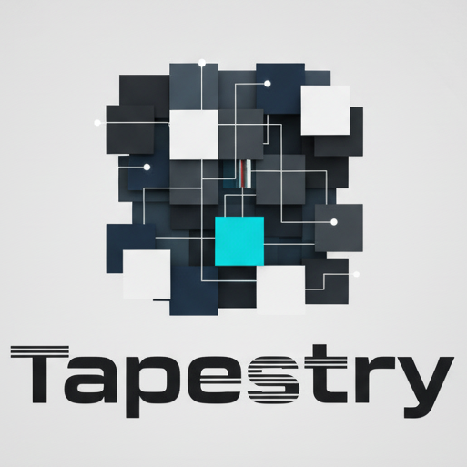
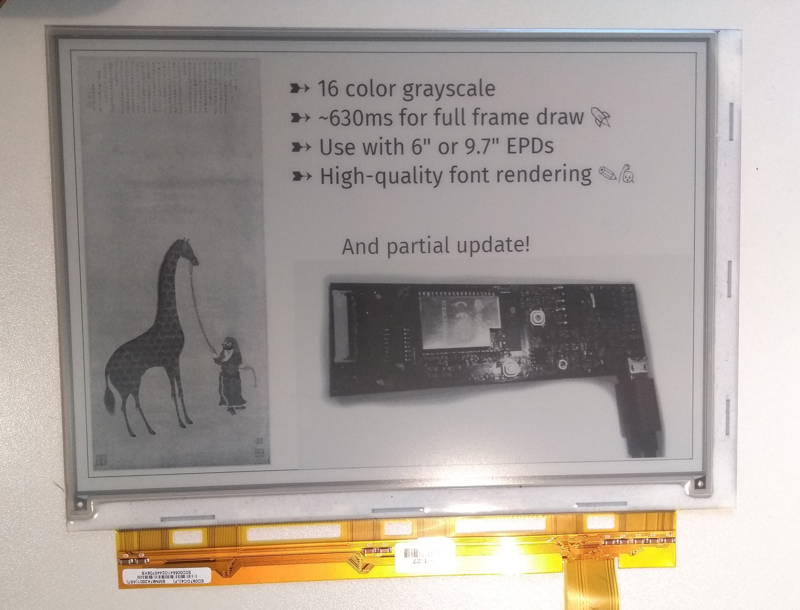
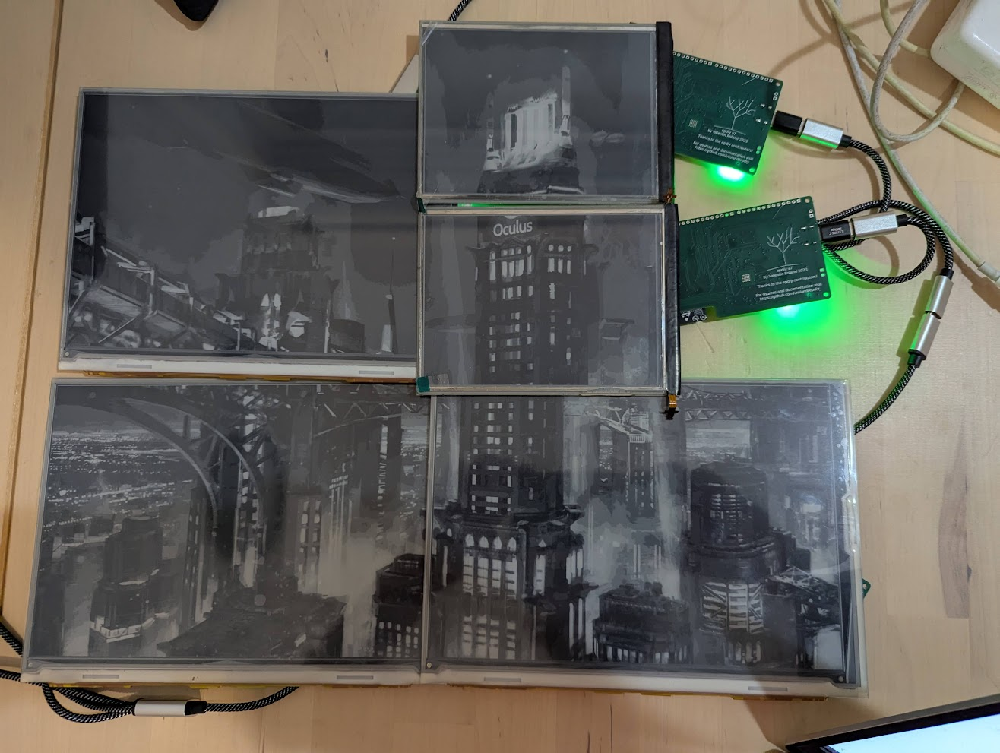
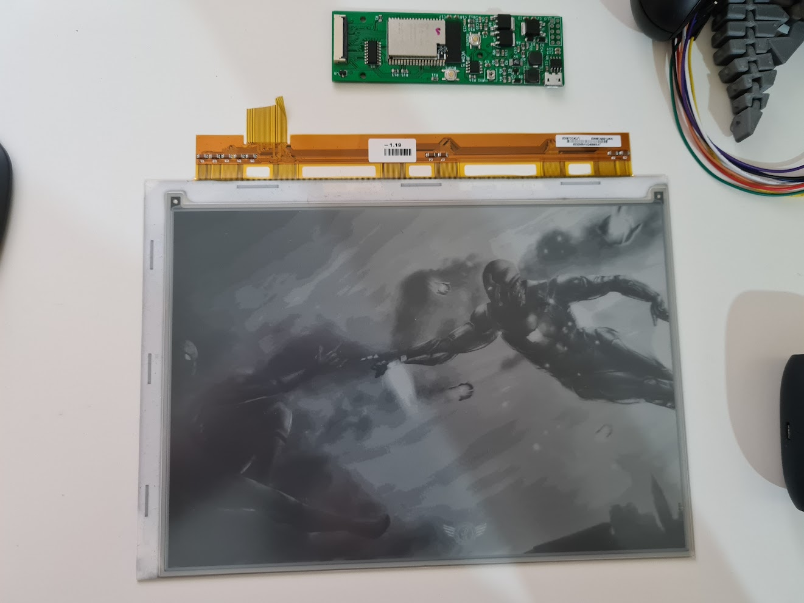
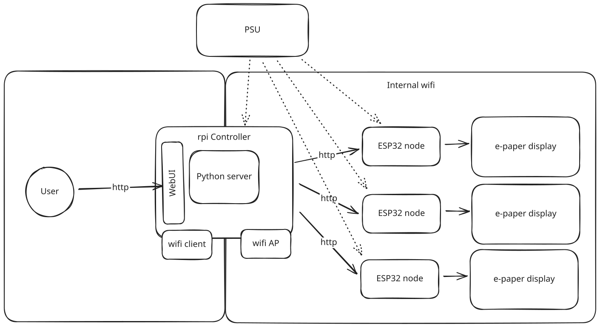
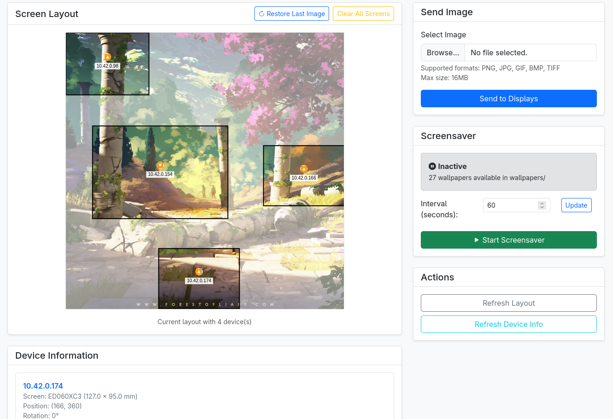
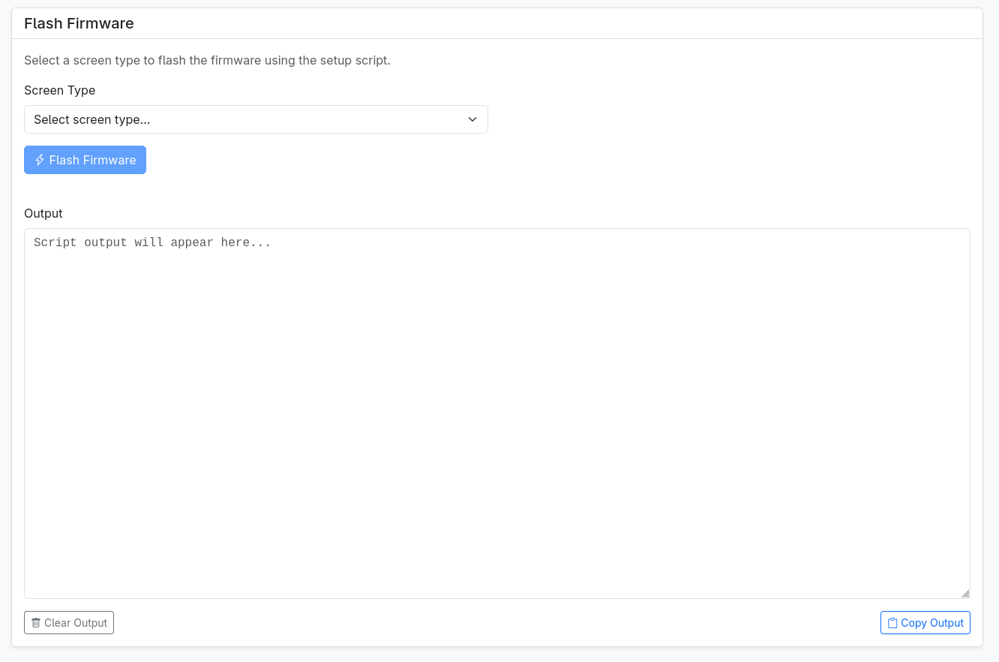
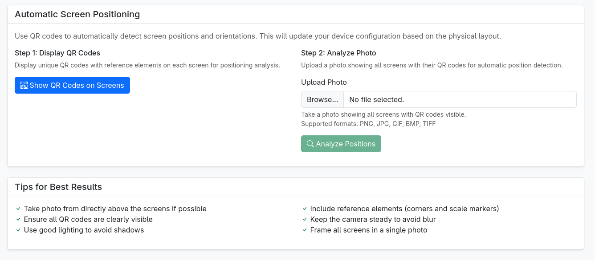
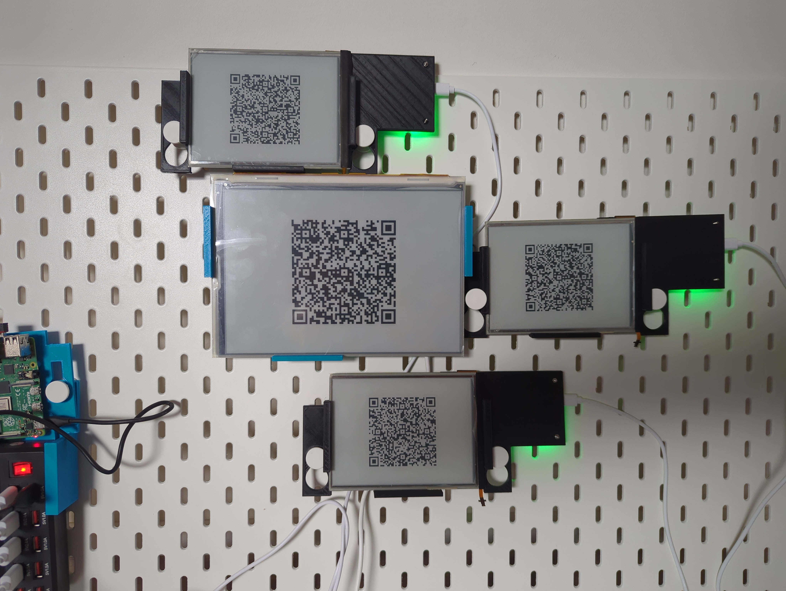
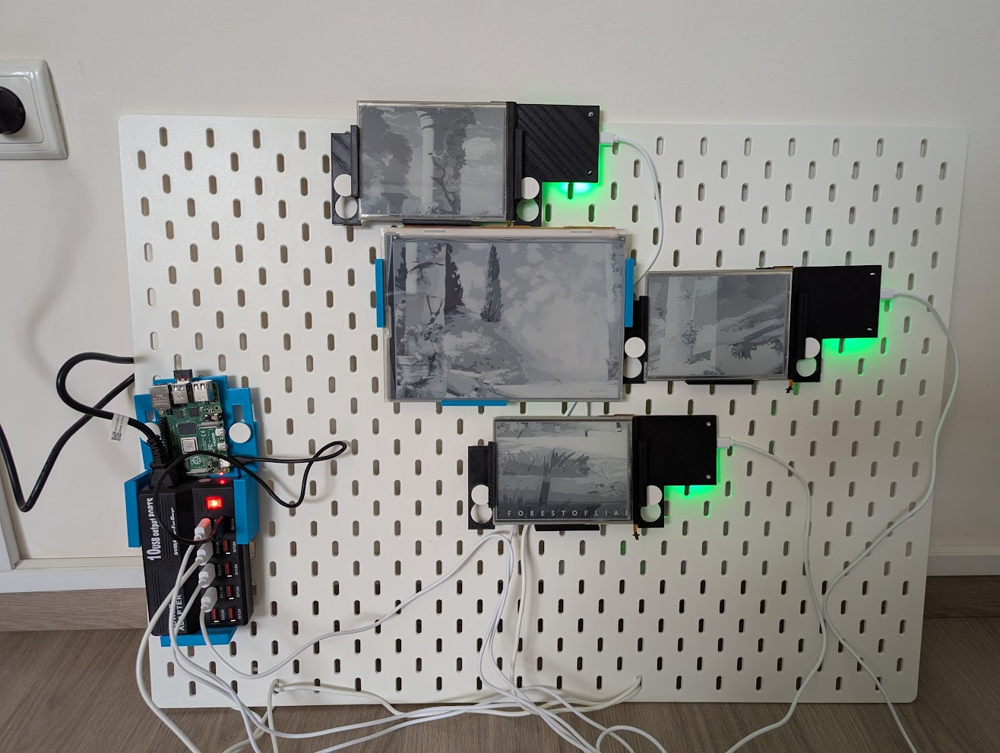

I’ve been working on this project on and off for 6 years and it’s finally taking shape, so I thought I’d do a writeup.
This will be part 1 in a multipart writeup:
- Intro
- Node
- PCB-display case
- Controller
- Hanging and power supply
What is Tapestry
Images drawn on Electronic Paper displays have a very unique, artsy feeling to them.
Ever since I got a Kindle, I was dreaming of having a poster made from e-paper, both for the unique quality and for the ability to replace what’s on display every now and then.
The problem is that big e-paper displays are insanely expensive. 32-inch displays, which are on the smaller side of poster sizes, cost upwards of $1,000, not including nonsense like shipping, maintainability, and the probably terrible app that will be required to operate it.
So I figured I’ll build one using a bunch of small screens.
The before times
I started with a rpi and Waveshare screen, specifically IT8951.
 While I managed to get it working by copying the code and connecting the hat, I couldn’t get it to work using USB / SPI, meaning I needed 1 rpi per screen, which seems expensive and complicated.
When connecting the USB interface, it showed up as a block device, and the demo software they provided (binary, no source) worked by sending specific weird instructions to the block device.
I couldn’t get their windows-based demo to work, and disassembling it didn’t make me any wiser. Asking their support for help, they said they’re unable to provide source code, so I was stuck.
While I managed to get it working by copying the code and connecting the hat, I couldn’t get it to work using USB / SPI, meaning I needed 1 rpi per screen, which seems expensive and complicated.
When connecting the USB interface, it showed up as a block device, and the demo software they provided (binary, no source) worked by sending specific weird instructions to the block device.
I couldn’t get their windows-based demo to work, and disassembling it didn’t make me any wiser. Asking their support for help, they said they’re unable to provide source code, so I was stuck.
A reason for optimism

When idly browsing the internet, I found EPDiy, which is an ESP32-based FOSS solution (hardware+firmware) for controlling e-paper devices. The author had some demos that looked quite promising, and was really friendly when we chatted. I decided to try and create a solution based on that.As a clueless person, I got someone on Fiverr to get the repo and send me some prepared PCBs. The Fiverr guy handled fabrication, electronic components, soldering, and basic testing. I also got some small screens from AliExpress, and got something working
The esp32 device exposed an HTTP server that had two endpoints:
- Clear screen
- Draw a binary image
The image format was device-specific (4-bit grayscale) and needed external metadata (dimensions), but had potential.
I was so proud of writing working C code that I took the time to contribute the http server to the EPDiy repo.
Multiple screens

PoCing the idea involved setting up multiple screens with multiple EPDiys, having them join my home network and driving them from some Python code from my laptop.Power was from my Framework laptop’s power brick, with multiple dumb USB-C splitters.
The resulting setup produces great images, but was very delicate. Many screens were destroyed during experimentation, especially their delicate ribbons.

Current design

We use a single rpi as a controller. This rpi has an additional wifi card, allowing it to be an access point for an internal wifi network.Each e-paper display has a single EPDiy attached to it, connected to the wifi network and exposing an HTTP server.
The controller runs a Python webui that remembers where the devices are located physically (position and rotation), and orchestrates creating the smaller images and sending them to the displays.
Everything is powered from a single PSU that gets AC wall voltage, and distributes 5V DC to all ESPs and the rpi.

There is a user-accessible webui that allows you to see the current status and division, and upload new images.
The webui also allows you to connect an EPDiy to the rpi via USB, and install new firmware on it, including the wifi credentials needed to connect to the internal network, and the screen type being connected to EPDiy.
Lastly, the webui allows you to send a QR image to every screen, and upload a photo of the layout with the QR codes showing, automatically generating a new layout file based on the QRs’ location and rotation.
Future work

- Once the code is clean enough, I’m planning to upload all of it to a public repo for people to appreciate and hopefully make use of.
- I had a lot of screens broken during experimentation, so I’m currently buying new gear. I’d like to get more screens, more EPDiys, a stronger PSU, and more cases.
- I suspect the QR positioning system needs more work. I tried multiple iterations of it, but I feel that it’s still getting the positioning slightly wrong.
If this is interesting to you, please let me know. It’ll encourage me to do the next posts in the series :)